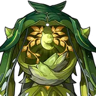

Bài Ca Không Nguyệt · Màn X
Vô Vàn Con Đường, Biến Chuyển Và Tan Rã
Nhiệm vụ Ma Thần — Bài Ca Không Nguyệt · Sumeru
Nhân vật xuất hiện
 Nhân vật chính · Nhà Lữ HànhLumineNhà Lữ Hành đến từ thế giới khác. Bị vị thần lạ mặt phong ấn và cướp mất người anh song sinh, cô bắt đầu hành trình đi tìm Bảy Vị Thần của Teyvat.
Nhân vật chính · Nhà Lữ HànhLumineNhà Lữ Hành đến từ thế giới khác. Bị vị thần lạ mặt phong ấn và cướp mất người anh song sinh, cô bắt đầu hành trình đi tìm Bảy Vị Thần của Teyvat. Bạn đồng hànhPaimonĐược Lumine cứu khỏi chết đuối hai tháng trước, Paimon tự nhận làm người dẫn đường cho cô. Hay ăn, hay nói, và rất ghét bị gọi là “thực phẩm dự trữ”.
Bạn đồng hànhPaimonĐược Lumine cứu khỏi chết đuối hai tháng trước, Paimon tự nhận làm người dẫn đường cho cô. Hay ăn, hay nói, và rất ghét bị gọi là “thực phẩm dự trữ”. Tiểu Vương Kusanali · Thảo ThầnNahidaBình phục để đối mặt trực diện cuộc thí nghiệm của Dottore nhắm vào Cây Thế Giới và vận mệnh Teyvat.
Tiểu Vương Kusanali · Thảo ThầnNahidaBình phục để đối mặt trực diện cuộc thí nghiệm của Dottore nhắm vào Cây Thế Giới và vận mệnh Teyvat.- “Nón Tròn” · Truyền nhân SumeruKẻ Lang ThangĐối đầu trực diện với Zandik — Dottore để thanh toán món nợ hàng trăm năm từ Tatarasuna tới Cây Thế Giới.
- Đội ngũ học giả và chiến binh SumeruAlhaitham · Kaveh · Cyno · Tighnari · Collei · Sethos · Faruzan · LaylaHợp sức bảo vệ Cây Thế Giới và ngăn chặn sự ăn mòn lan rộng khắp lục địa Sumeru.
 Các đồng minh thành thị, sa mạc và Hội Đồng Bí MậtDehya · Candace · Dunyarzad · Dori · Nefer · Jeht · Rahman · HaypasiaGiữ vững hậu phương từ Thành Sumeru tới Làng Aaru trong chiến dịch giải cứu Cây Thế Giới.
Các đồng minh thành thị, sa mạc và Hội Đồng Bí MậtDehya · Candace · Dunyarzad · Dori · Nefer · Jeht · Rahman · HaypasiaGiữ vững hậu phương từ Thành Sumeru tới Làng Aaru trong chiến dịch giải cứu Cây Thế Giới.- NĐại Hiền Giả và Hiền Giả Giáo ViệnNaphis và CyrusPhối hợp kích hoạt hệ thống phòng thủ tri thức cùng các học giả Giáo Viện.

Thảo Long Vương, Thất Trụ Deshret và Trấn LinhApep · Thoth · Heryshaf · Sobek · LilouparCùng nhóm Aranara và Pari Sorush đồng loạt đứng lên bảo vệ đất thánh Sumeru. Hỏa Thần Natlan và nhóm MondstadtMavuika · Albedo · Sucrose · AmberỨng chiến và dõi theo biến động toàn cầu khi Cây Thế Giới bị uy hiếp (cùng hồi ức về Mualani, Kachina, Varesa và đồng đội Natlan).
Hỏa Thần Natlan và nhóm MondstadtMavuika · Albedo · Sucrose · AmberỨng chiến và dõi theo biến động toàn cầu khi Cây Thế Giới bị uy hiếp (cùng hồi ức về Mualani, Kachina, Varesa và đồng đội Natlan).- Thiên Sứ Hội Ma Nữ và Các Chấp Chính Thiên LýNicole · Ronova · Istaroth · NaberiusNicole tiếp ứng từ bên ngoài trong khi các Chấp Chính Thiên Lý hiện chiếu quan sát biến cố Cây Thế Giới.
- Hai Quan Chấp Hành FatuiDottore · PantaloneDottore (Zandik) thực hiện tham vọng chạm tới Ngai Thần và Cây Thế Giới với sự hậu thuẫn của Pantalone.
Các phần
- Phần 1Thời Khắc U Tối
- Phần 2Tháp Thông Thiên Của Vọng Tưởng Và Chân Thức
- Phần 3Purana Hư Không Và Tro Tàn
- Phần 4Câu Chuyện Xưa Cũ, Như Một Vườn Hoa
Toàn bộ lời thoại được lấy từ bản tiếng Việt chính thức của trò chơi. Ở những đoạn người chơi được chọn câu trả lời, truyện chọn một lựa chọn duy nhất.